Las 40 mejores películas de la historia
10 Junio de 2016
Me ha basado en mi opinión y criterio personal para decidir de entre las películas que conozco, cuales son las mejores de la historia, por ahora, si queréis compartir alguna opinión, contactad conmigo..
- 40. "Berlín Occidente" (1948) dir. Billy Wilder.
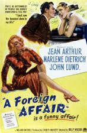
- 39. "El silencio de los corderos" (1991) dir. Jonathan Demme.

- 38. "Un mundo perfecto" (1993) dir. Clint Eastwood.
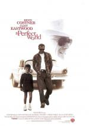
- 37. "Primera Plana" (1974) dir. Billy Wilder.

- 36. "Las aventuras de Jeremiah Johnson" (1972) dir. Sydney Pollack.
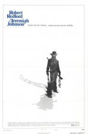
- 35. "Traidor en el infierno" (1953) dir. Billy Wilder.

- 34. "Cartas desde Iwo Jima" (2006) dir. Clint Eastwood.
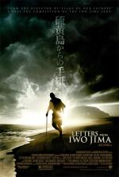
- 33. "Blade Runner" (1982) dir. Ridley Scott.
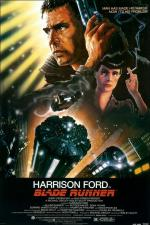
- 32. "Un gángster para un milagro" (1961) dir. Frank Capra.
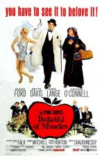
- 31. "Mystic River" (2003) dir. Clint Eastwood.

- 30. "Bailando con lobos" (1990) dir. Kevin Costner.
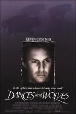
- 29. "The Artist" (2011) dir. Michel Hazanavicius.
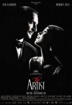
- 28. "Sin Perdón" (1992) dir. Clint Eastwood.

- 27. "El graduado" (1967) dir. Mike Nichols.
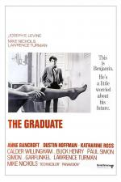
- 26. "Crimen perfecto" (1954) dir. Alfred Hitchcock.
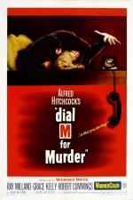
- 25. "Gran Torino" (2008) dir. Clint Eastwood.

- 24. "¿Qué ocurrió entre mi padre y tu madre?" (1972) dir. Billy Wilder.
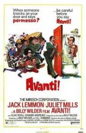
- 23. "Cinema Paradiso" (1988) dir. Giuseppe Tornatore.
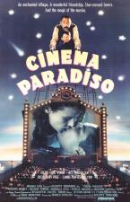
- 22. "Bola de fuego" (1941) dir. Howard Hawks.
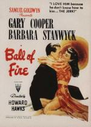
- 21. "Irma la dulce" (1963) dir. Billy Wilder.
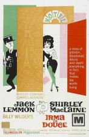
- 20. "El crepúsculo de los dioses" (1950) dir. Billy Wilder.
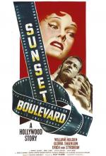
- 19. "El séptimo sello" (1957) dir. Ingmar Bergman.

- 18. "Beau Geste" (1939) dir. William A. Wellman
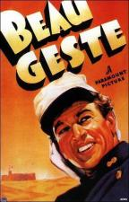
- 17. "Capitanes Intrépidos" (1937) dir. Victor Fleming.
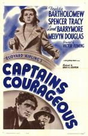
- 16. "La ciudad de las estrellas (La La Land)" (2016) dir. Damien Chazelle.
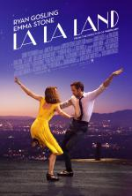
- 15. "La gran evasión" (1963) dir. John Sturges.
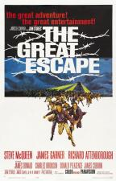
- 14. "La ventana indiscreta" (1954) dir. Alfred Hitchcock.

- 13. "Qué bello es vivir" (1956) dir. Frank Capra.

- 12. "Testigo de Cargo" (1963) dir. Billy Wilder.

- 11. "Con la muerte en los talones" (1959) dir. Alfred Hitchcock.

- 10. "Perdición" (1944) dir. Billy Wilder.

- 9. "Psicosis" (1960) dir. Alfred Hitchcock.

- 8. "Vacaciones en Roma" (1953) dir. William Wyler.

- 7. "Ninotchka" (1939) dir. Ernst Lubitsch.
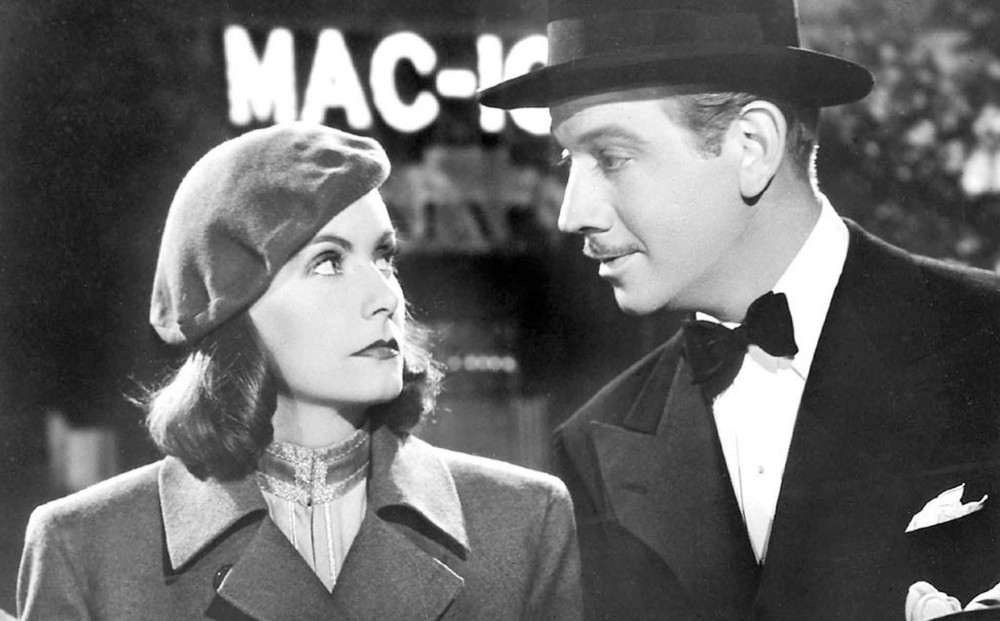
- 6. "El Apartamento" (1960) dir. Billy Wilder.

- 5. "Ser o no ser" (1942) dir. Ernst Lubitsch.

- 4. "Los siete samuráis" (1954) dir. Akira Kurosawa.

- 3. "El bazar de las sorpresas" (1940) dir. Ernst Lubitsch.

- 2. "Casablanca" (1942) dir. Michael Curtiz.
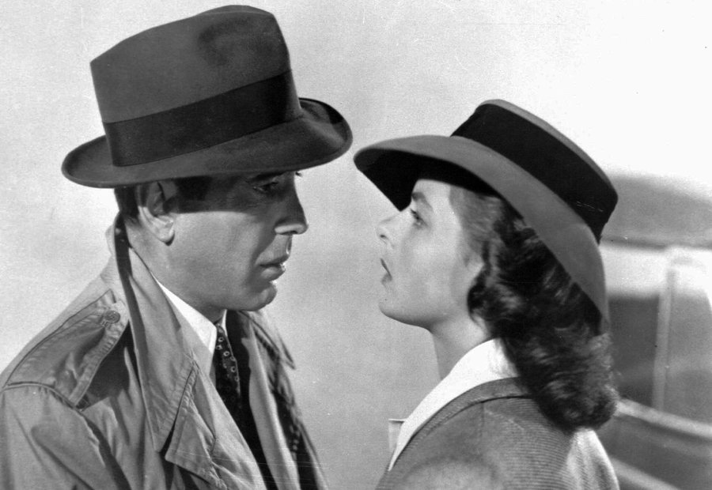
- 1. "Con faldas y a lo loco" (1960) dir. Billy Wilder.
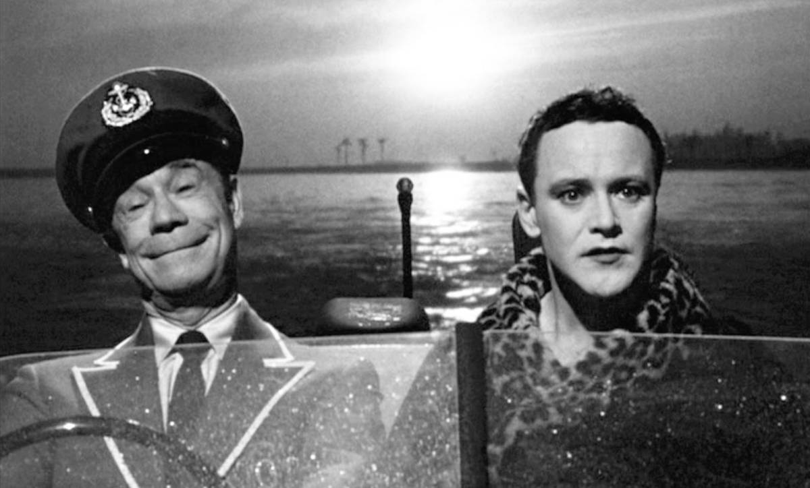